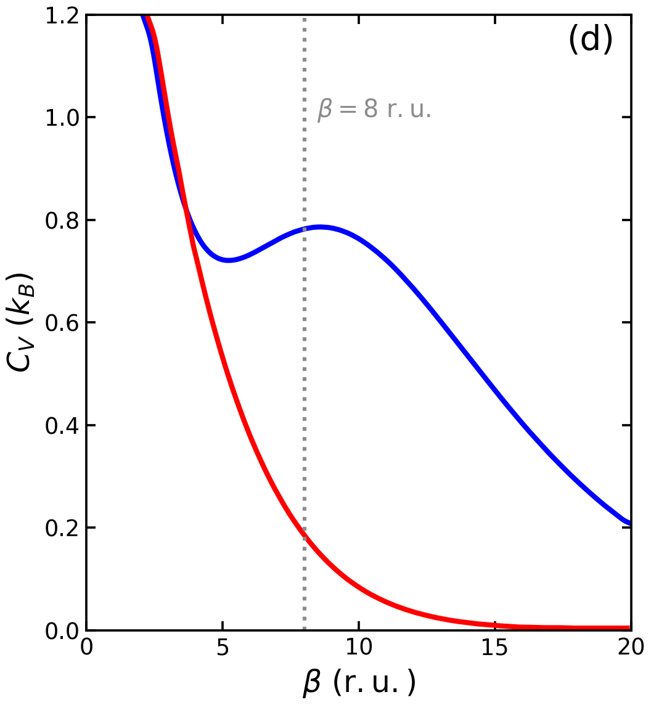
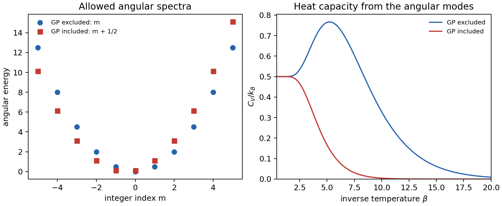

Model Calculation
Geometric Phase in Jahn-Teller Thermodynamics
The geometric phase in a conical-intersection problem does not change the adiabatic potential energy surfaces. It changes how nuclear wavefunctions are allowed to move on those surfaces. In the two-state \(E\otimes e\) Jahn-Teller model, that distinction is sharp enough to derive by hand: the same Mexican-hat potential can give different ground-state degeneracies, different low-lying vibronic spectra, and a visibly different low-temperature heat capacity.[1]
The Diabatic Model
The model has two electronic states and two nuclear coordinates \((x,y)\). This is the standard linear \(E\otimes e\) Jahn-Teller Hamiltonian used to expose pseudorotation, conical intersections, and Berry-phase effects.[2],[6] With unit mass, unit \(\hbar\), and harmonic frequency \(\omega=1\), the diabatic Hamiltonian is
where the diabatic potential energy matrix is
In polar coordinates, \(x=r\cos\theta\), \(y=r\sin\theta\), this becomes
The important point is that the diabatic electronic basis is independent of nuclear coordinates. The kinetic energy is therefore a simple diagonal nuclear operator in this representation. The conical-intersection topology is present, but it is encoded in the two-state matrix structure rather than in a singular-looking basis.
Adiabatic Surfaces
Diagonalizing the \(2\times2\) potential matrix gives two adiabatic potential energy surfaces,
They meet at \(r=0\), the conical intersection. The lower surface has a circular trough at \(r=c\), the usual Mexican-hat geometry of the linear Jahn-Teller problem. The Jahn-Teller stabilization scale is
which reduces to \(E_{\mathrm{JT}}=c^2/2\) in these reduced units. This is why the parameter \(c\) controls the separation between the high-symmetry conical-intersection point and the pseudorotational trough.
A real adiabatic eigenvector convention can be written as
The half-angle is the whole story. A nuclear loop around the conical intersection sends \(\theta\rightarrow\theta+2\pi\), and therefore
The adiabatic electronic wavefunction changes sign after one circuit. The total molecular wavefunction must remain single-valued, so the nuclear part must compensate this sign, or the same physics must be represented as a vector potential in the kinetic operator. This is the molecular version of Berry's geometric phase around a conical intersection.[3],[4],[5]
Why the Kinetic Energy Changes
The potential surfaces are eigenvalues of \(V_{\mathrm{diab}}\). They are insensitive to multiplying an electronic eigenvector by a phase. The kinetic energy is different because it contains nuclear derivatives. If
then
The second term is the derivative coupling. It remembers how the adiabatic electronic basis twists as the nuclei move. If one differentiates a locally real adiabatic basis without carrying the global sign structure, one obtains a formally useful but topologically incomplete Hamiltonian. In the notation of the paper, the brute-force, GP-excluded kinetic operator is
The diagonal \(1/(8r^2)\) term is the diagonal Born-Oppenheimer correction in this two-state representation. However, this local derivative form does not by itself restore the missing global sign accumulated around the conical intersection.
A consistent GP-included representation can be obtained by multiplying the real eigenvectors by \(e^{i\theta/2}\). This makes the electronic basis single-valued after a full circuit, because the phase factor itself also changes sign. The price is that the nuclear kinetic energy acquires a geometric vector potential.[4],[5] In compact form,
whereas the GP-excluded version sets the geometric vector potential to zero. For the angular coordinate in this model, the GP-included single-state limit has the characteristic replacement
Equivalently, one may leave the derivative ordinary but impose an antiperiodic nuclear boundary condition,
instead of the ordinary periodic condition \(\chi(\theta+2\pi)=\chi(\theta)\). These two descriptions carry the same geometric phase.
What Changes and What Does Not
The distinction can be summarized cleanly:
| Quantity | GP included | GP excluded |
|---|---|---|
| Adiabatic PES | \(\Lambda_\pm=\frac12(r\mp c)^2\) | same |
| Electronic sign after one loop | retained as a \(\pi\) phase | artificially removed |
| Nuclear boundary condition | antiperiodic, or periodic with vector potential | ordinary periodic |
| Angular quantum numbers | half-integer shifted | integer |
| Low-energy spectrum | ground-state doublet in the full \(E\otimes e\) model | nondegenerate ground state |
Thus the GP is not a new potential-energy correction. It is a topological correction to the kinetic term, or equivalently to the admissible nuclear wavefunctions.
Degeneracy and Energy Levels
The simplest way to see the ground-state degeneracy is to freeze the radius near the Jahn-Teller trough and look only at pseudorotation. Without GP, the angular functions are ordinary periodic waves,
with angular energies proportional to \(m^2\). The lowest angular state is \(m=0\), so it is nondegenerate.
With GP, the nuclear wavefunction must compensate the electronic sign change. The allowed angular dependence is shifted by half a quantum:
The lowest values are \(m+1/2=+1/2\) and \(m+1/2=-1/2\). They are exactly degenerate. In the full two-dimensional Jahn-Teller calculation, the same topological mechanism appears as a doubly degenerate vibronic ground state in the GP-included Hamiltonian, while the artificial GP-excluded Hamiltonian has a nondegenerate ground state.[6]
Consequences for Kinetic and Potential Energies
Even though the two cases share the same adiabatic PES, their expectation values of kinetic and potential energy need not match. The GP changes the short-range behavior near \(r=0\), where the radial derivative and \(1/r^2\) angular terms dominate over the finite potential. In the GP-included full two-state problem, the correct vector-potential structure is equivalent to the smooth diabatic Hamiltonian. In the GP-excluded artificial problem, the nuclear wavefunction sees a different angular boundary condition and develops a different near-CI structure.
This is why the energy decomposition in the benchmark figure can differ even when the plotted potential surfaces are identical. The surface is the same landscape, but the quantum particle is not allowed to explore it with the same phase rule.
Why Heat Capacity Is Sensitive
Thermodynamic observables are spectral sums. For the partition function,
The heat capacity can be written as the energy fluctuation,
At high temperature, many states contribute and the topological shift can be partly washed out. At low temperature, large \(\beta\) exponentially suppresses high-energy states, so the result is controlled by the lowest few vibronic levels. Therefore, changing the ground-state degeneracy and the first excitation gaps can strongly reshape \(C_V\), even when the total ground energy itself is only modestly shifted.
This is the same logic as in Fig. 1 of the perspective by Zhai, Shang, and Liu: the red and blue curves are not separated because the Mexican-hat PES changed. They separate because the GP-included and GP-excluded Hamiltonians quantize nuclear motion differently near the conical intersection.[1]
The broader paper then shows that the multi-electronic-state path-integral formulation, introduced for exact quantum statistics of multi-electronic-state systems, retains this geometric information through products of adjacent adiabatic overlap matrices along the imaginary-time ring polymer.[1],[7]

The red curve collapses rapidly as \(\beta\) grows because the GP-included low-temperature spectrum has little accessible thermal fluctuation after the lowest doublet is selected. The blue curve retains a broad low-temperature feature because the artificial GP-excluded spectrum has a different low-energy spacing pattern. This is the thermodynamic signature of changing the boundary condition while leaving the adiabatic potential surfaces unchanged.
Minimal Pseudorotor Check
The following small diagnostic is not the full \(r,\theta\) vibronic problem. It intentionally keeps only the angular mechanism:
The left panel shows how the allowed angular levels are shifted by half a quantum. The right panel computes \(C_V/k_B\) from the discrete angular spectra. The curves should not be overread as the full two-dimensional benchmark, but they reproduce the central cause: a topological boundary condition changes the low-energy spectrum, and thermodynamics follows.

The script used to generate this figure and the accompanying CSV is available at assets/code/jt/gp_pseudorotor_thermo.py. The digitized heat-capacity reproduction above is generated by assets/code/jt/gp_fig1d_heat_capacity_reproduction.py.
Takeaway
The geometric phase in the Jahn-Teller \(E\otimes e\) model is best viewed as a kinetic and boundary-condition effect exposed by the adiabatic representation. The diabatic Hamiltonian is smooth and complete. The adiabatic potential surfaces are the same whether the GP is retained or discarded. The difference is that the GP-included Hamiltonian carries the sign change of the adiabatic electronic eigenvectors around the conical intersection, either through an antiperiodic nuclear wavefunction or through a vector potential that shifts angular momentum by one half. That shift changes the ground-state degeneracy, reorganizes the low-lying vibronic spectrum, redistributes kinetic and potential energy expectation values, and becomes especially visible in low-temperature heat capacity.
References
- Y. Zhai, Y. Shang, and J. Liu, "Geometric Phase Effect in Thermodynamic Properties and in the Imaginary-Time Multi-Electronic-State Path Integral Formulation," J. Phys. Chem. Lett. 17, 4274-4291 (2026). DOI: 10.1021/acs.jpclett.6c00429.
- H. C. Longuet-Higgins, U. Öpik, M. H. L. Pryce, and R. A. Sack, "Studies of the Jahn-Teller Effect. II. The Dynamical Problem," Proc. R. Soc. Lond. A 244, 1-16 (1958). DOI: 10.1098/rspa.1958.0022.
- M. V. Berry, "Quantal Phase Factors Accompanying Adiabatic Changes," Proc. R. Soc. Lond. A 392, 45-57 (1984). DOI: 10.1098/rspa.1984.0023.
- C. A. Mead and D. G. Truhlar, "On the Determination of Born-Oppenheimer Nuclear Motion Wave Functions Including Complications Due to Conical Intersections and Identical Nuclei," J. Chem. Phys. 70, 2284-2296 (1979). DOI: 10.1063/1.437734.
- C. A. Mead, "The Geometric Phase in Molecular Systems," Rev. Mod. Phys. 64, 51-85 (1992). DOI: 10.1103/RevModPhys.64.51.
- F. S. Ham, "Berry's Geometrical Phase and the Sequence of States in the Jahn-Teller Effect," Phys. Rev. Lett. 58, 725-728 (1987). DOI: 10.1103/PhysRevLett.58.725.
- X. Liu and J. Liu, "Path Integral Molecular Dynamics for Exact Quantum Statistics of Multi-Electronic-State Systems," J. Chem. Phys. 148, 102319 (2018). DOI: 10.1063/1.5005059.